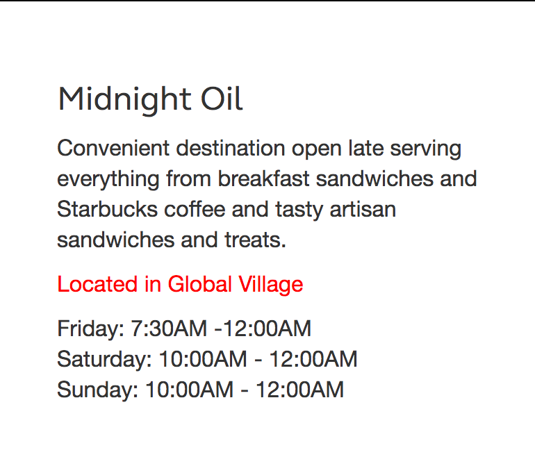
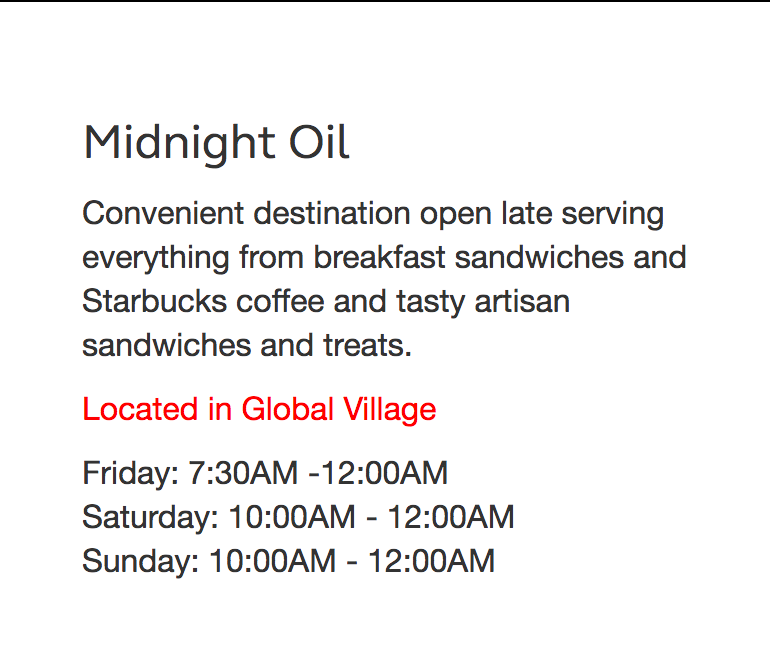

Thought At Work - Website 2016
Thought At Work is a three-day, student-run, student-focused design conference that takes place every October at Rochester Institute of Technology.
My Role
For T@W 2016, I worked with a team of developers to build the conference website. It was my job to develop many of the custom interfaces that were wireframed by our design team. It was also my responsibility to ensure the seemless transition of desktop elements to smaller platforms.
Live Site: http://thoughtatwork.cias.rit.edu/
Git Hub: https://github.com/ThoughtAtWork/Website
Evolution of Navigation
The website's main navigation scheme. The format of this element evolved based on the viewing medium and screen size.
Team Page
A self-populating team page. Profiles were generated with a javascript based txt parser and integration with Imgix for decreased load time.
Resturant & Location
A responsive menu that showcases resturants in proximity to the conference. Developed with javascript.
 

Evolution of Footer
The website's footer. The format of this element evolved based on the viewing medium and screen size.